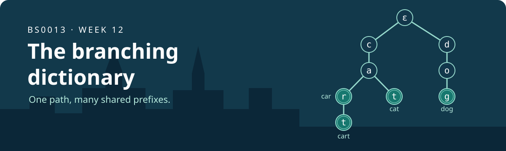

Week 12 · Interactive lesson · Version 1
Tries and String-Oriented Structures
From characters to prefix trees: shared prefixes, safe pruning and memory trade-offs.

Essential path: sections 1–9 and 13 (45–60 minutes); 10–12 are optional enrichment/reference.
1. Why tries exist
A trie stores a set of strings as a rooted, character-labelled tree. Unlike a BST, each branch is selected by the next character, not a comparison of complete keys. The path ca may exist without the key ca being stored. Autocomplete, dictionaries and prefix routing are natural workloads.
2. Anatomy and invariants
Root ε represents the empty prefix. Every nonroot has one parent; sibling character labels are unique. Double outlines indicate terminal keys, which need not be leaves. Size counts terminals. The root is permanent. After pruning, every nonroot leaf is terminal.
Contract: nonempty lowercase ASCII a–z keys. Empty prefix is valid; empty exact search or deletion returns false. Validate before mutation. Unicode requires an explicit encoding and normalization policy.
3. Construct a trie
Load a preset or your own dictionary. Browser limits: 20 distinct keys, 12 letters per key, 120 nodes. Select a node to inspect its dense child slots.
Double outline = terminal. Highlight = selected node.
4. Operation microscope
Predict, then trace individual characters, allocations and terminal changes. The microscope works on an independent copy. Import again after changing the main dictionary.
5. Exact lookup, prefix lookup and autocomplete
Exact lookup requires terminal membership; prefix lookup does not. Alphabetical DFS emits terminal keys before their extensions. Completion must traverse the matching subtree and emit results.
6. Deletion and pruning
Clear the terminal marker and walk back toward the root. A nonroot node can be pruned exactly when it is nonterminal and childless. Missing keys change nothing. Predict each deletion in the independent dictionary car, cart, cat, dog.
7. Invariant debugger
Repair the corrupted prefix table: each row is a node whose parent is its prefix minus the last character. Edit labels or terminal flags, add/remove rows, and correct the recorded key count. Empty prefix denotes the root.
| Prefix | Terminal | Action |
|---|
8. Dense versus sparse children
Dense arrays allocate A slots per node, supporting direct indexing. Sparse containers store d actual children plus metadata. Inspect the array in section 3.
| Representation | Child lookup | Ordered enumeration |
|---|---|---|
| Fixed array | Θ(1) | Scan A slots |
| Unsorted vector | O(d) | Order entries first |
| Sorted vector | O(log d) | Natural order |
| Ordered map | O(log d) | Natural order |
| Hash map | Expected O(1) | Order entries first |
Locality, allocation overhead, labels and container metadata also matter.
9. Complexity laboratory
L = key length; A = alphabet size; M = nodes including root; P = prefix length; V = visited completion nodes; S = total emitted characters. Successful dense exact lookup Θ(L); unsuccessful lookup may stop early. Insertion and deletion O(LA) worst case, O(L) for fixed A. Completion O(P + AV + S). Dense child storage Θ(MA).
Pointer payload estimator
M−1 non-null child pointers versus MA allocated slots. Payload only; excludes all metadata and allocation overhead.
Logical operation counts
| Workload | Keys | Nodes | Lookup count | Completion visits |
|---|
10. Radix compression (optional)
Compress nonterminal single-child paths into string-labelled edges. Preserve terminal boundaries. A search may mismatch inside an edge. Inserting care into cart splits the edge at car.
Ordinary trie
Compressed trie
11. Engineering decisions
Hashing strings can cost Θ(L); balanced BST comparisons may inspect multiple characters. Ordered BST ranges support prefix queries; tries directly share prefixes. Choose for the actual workload.
12. C++20 implementation reference
Independent examples demonstrate concepts without providing the assessed lab implementation. Example index and build instructions.
character-index.cpp
Validate a–z before indexing. Source file
Expected: a=0, z=25
Compile: g++ -std=c++20 -Wall -Wextra -pedantic character-index.cpp -o demo && ./demo
#include <cassert>
#include <stdexcept>
#include <iostream>
unsigned index_of(char c) { if(c<'a'||c>'z') throw std::invalid_argument("ASCII lowercase required"); return static_cast<unsigned>(c-'a'); }
int main(){assert(index_of('a')==0 && index_of('z')==25);try{index_of('7');assert(false);}catch(const std::invalid_argument&){} std::cout<<"a=0, z=25\n";}terminal-marker.cpp
Distinguish a terminal marker from path existence. Source file
Expected: ca: prefix only; car: key
Compile: g++ -std=c++20 -Wall -Wextra -pedantic terminal-marker.cpp -o demo && ./demo
#include <cassert>
#include <iostream>
struct Prefix { bool path_exists; bool terminal; };
int main(){Prefix ca{true,false}, car{true,true};assert(ca.path_exists&&!ca.terminal);assert(car.terminal);std::cout<<"ca: prefix only; car: key\n";}node-ownership.cpp
Observe recursive ownership of a tiny tree. Source file
Expected: Only root remains
Compile: g++ -std=c++20 -Wall -Wextra -pedantic node-ownership.cpp -o demo && ./demo
#include <array>
#include <cassert>
#include <iostream>
#include <memory>
struct Node { inline static int alive=0; Node(){++alive;} ~Node(){--alive;} std::array<std::unique_ptr<Node>,26> children{}; };
int main(){Node root;root.children[0]=std::make_unique<Node>();root.children[0]->children[1]=std::make_unique<Node>();assert(Node::alive==3);root.children[0].reset();assert(Node::alive==1);std::cout<<"Only root remains\n";}prefix-walk.cpp
Follow preconstructed edges without implementing the dictionary. Source file
Expected: Two indexed edges followed
Compile: g++ -std=c++20 -Wall -Wextra -pedantic prefix-walk.cpp -o demo && ./demo
#include <array>
#include <cassert>
#include <iostream>
#include <memory>
struct Node { std::array<std::unique_ptr<Node>,3> children{}; };
int main(){Node root;root.children[0]=std::make_unique<Node>();root.children[0]->children[1]=std::make_unique<Node>();const Node* p=&root;for(unsigned i:{0u,1u}){assert(p->children[i]);p=p->children[i].get();}assert(!p->children[2]);std::cout<<"Two indexed edges followed\n";}allocation-count.cpp
Count unique prefixes with a set, not a trie implementation. Source file
Expected: 6 distinct prefix nodes including root
Compile: g++ -std=c++20 -Wall -Wextra -pedantic allocation-count.cpp -o demo && ./demo
#include <cassert>
#include <iostream>
#include <set>
#include <string>
int main(){std::set<std::string> prefixes{""};for(std::string word:{"car","cart","cat"})for(std::size_t i=1;i<=word.size();++i)prefixes.insert(word.substr(0,i));assert(prefixes.size()==6);std::cout<<prefixes.size()<<" distinct prefix nodes including root\n";}safe-pruning.cpp
Test the pruning predicate in isolation. Source file
Expected: Only nonroot unused leaves may be pruned
Compile: g++ -std=c++20 -Wall -Wextra -pedantic safe-pruning.cpp -o demo && ./demo
#include <cassert>
#include <iostream>
struct MiniNode{bool terminal;unsigned children;};
bool eligible(MiniNode n,bool root){return !root&&!n.terminal&&n.children==0;}
int main(){assert(!eligible({false,1},false));assert(!eligible({true,0},false));assert(!eligible({false,0},true));assert(eligible({false,0},false));std::cout<<"Only nonroot unused leaves may be pruned\n";}child-representations.cpp
Compare slot and entry counts, not total object sizes. Source file
Expected: 26 slots vs 2 entries (not total bytes)
Compile: g++ -std=c++20 -Wall -Wextra -pedantic child-representations.cpp -o demo && ./demo
#include <array>
#include <cassert>
#include <iostream>
#include <map>
int main(){int a=1,t=2;std::array<int*,26> dense{};dense[0]=&a;dense[19]=&t;std::map<char,int*> sparse{{'a',&a},{'t',&t}};assert(dense[19]==sparse.at('t'));std::cout<<dense.size()<<" slots vs "<<sparse.size()<<" entries (not total bytes)\n";}lexicographic-order.cpp
Observe ordered map iteration. Source file
Expected: art
Compile: g++ -std=c++20 -Wall -Wextra -pedantic lexicographic-order.cpp -o demo && ./demo
#include <cassert>
#include <iostream>
#include <map>
#include <string>
int main(){std::map<char,int> children{{'t',2},{'a',1},{'r',3}};std::string labels;for(const auto& entry:children)labels+=entry.first;assert(labels=="art");std::cout<<labels<<"\n";}13. Practice and references
These original ungraded questions are independent of Moodle. Predict, check, explain.
Open Data Structures (C++) · C++ unique_ptr · C++ containers